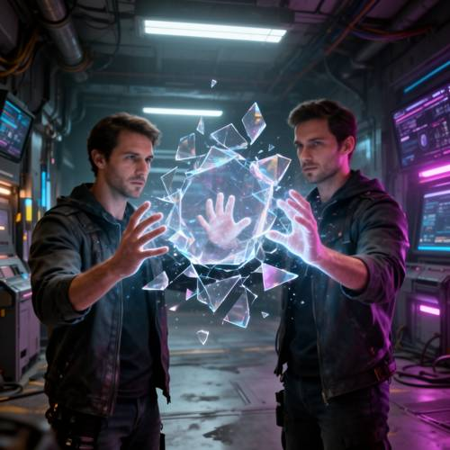
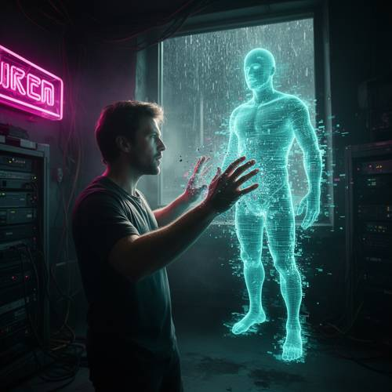

Style — Please generate a picture of a man touching an unstable holographic pr
Please generate a picture of a man touching an unstable holographic projection with his hands without sensing gloves in a cyberpunk-style room.

Direct — one call, no iteration

Continuum — Kimi K3 + FLUX.2-dev
Judge — Direct
PASSStyle — The image displays a cyberpunk aesthetic, characterized by a dark, industrial room with exposed pipes and wires, illuminated by neon blue and purple lights from futuristic computer screens and overhead fixtures.
FAILAction - Hand (Character/Anthropomorphic) — The image depicts two identical men instead of the requested single "a man". Both men have their hands raised near a holographic projection, but not in direct physical contact. A holographic hand is visible inside the projection. The men’s visible hands are correctly formed with five fingers each. Due to the presence of two men instead of one, the image does not accurately fulfill the prompt.
PASSCompound - Imagination — The image shows men interacting with a glowing, translucent, shattering holographic projection, a concept that is not possible in real life.
PASSGrammar - Negation — The hands of both men in the image are bare, and they are not wearing any type of gloves, which aligns with the "without sensing gloves" requirement.
Judge — Continuum
PASSStyle — The image displays a cyberpunk style, evidenced by the dark, tech-filled room with server racks, messy wires, a pink neon sign, and a glowing holographic figure.
PASSAction - Hand (Character/Anthropomorphic) — A man is shown with both hands raised towards the holographic projection. The hologram appears to be glitching or dissolving into pixels where the man's hands are in close proximity, visually indicating the act of "touching". His hands are bare and anatomically correct.
PASSCompound - Imagination — The image depicts a man interacting with and seemingly touching a holographic projection, which is an intangible object made of light. This concept is physically impossible, thus falling into the category of imagination.
PASSGrammar - Negation — The man in the image is using his bare hands to interact with the hologram; he is not wearing any kind of gloves, including sensing gloves.
What the agent did
Thinking
The user wants a cyberpunk scene: a man touching an unstable holographic projection with bare hands (no gloves). Let me generate with flux2-dev.
Step 1 — `generate_image`
{
"model": "flux2-dev",
"prompt": "Cinematic photo of a man in a cyberpunk-style room reaching out with bare hands (no gloves) to touch a glitching, unstable holographic projection floating mid-air in front of him. The hologram is a translucent cyan-blue wireframe humanoid figure that is visibly unstable: flickering scan lines, fragmented distorted edges, pixelated digital noise and ghosting artifacts breaking apart where his fingers pass through it. The man's fingertips press into the hologram, distorting it like ripples. The room is dark and moody with neon magenta and teal lighting, glowing signage, server racks and cables along the walls, light haze, rain-streaked window. Dramatic rim light from the hologram illuminating the man's face and hands. High detail, cinematic composition, photorealistic."
}
Result img_0
Thinking
The image looks quite good: man with bare hands touching an unstable glitching hologram in a cyberpunk room with neon sign, server racks, rain-streaked window. The hologram is visibly unstable (pixelated noise, fragmentation). Hands are bare. This matches the prompt well. Let me inspect the hands detail briefly? The composition looks strong. I'll check hand region to make sure hands look fine.
Step 2 — `inspect_region`
{
"image": "img_0",
"roi": "the man's hands touching the hologram",
"padding": 40
}
Result img_1
Thinking
The hands look good — bare hands, fingers penetrating the hologram with particle distortion. All prompt elements present: man, bare hands, unstable holographic projection, cyberpunk room. This is good. Mark best and stop.
Model
The hands look great — bare fingers pressing into the hologram with particle distortion, exactly the "no sensing gloves" touch the prompt asked for. All elements are present and correct:
Step 3 — `mark_best`
{
"image": "img_0",
"reason": "All requested elements present and well-executed: a man touching a glitching, unstable cyan hologram with bare hands in a neon-lit cyberpunk room with server racks and rain-streaked window. Hand detail verified at full resolution."
}
Model
The image is complete and matches your request: - **The man** — shown in profile, reaching out with both **bare hands** (no gloves) into the projection - **Unstable hologram** — a translucent cyan wireframe humanoid figure visibly breaking apart with pixelated glitch artifacts, scan-line texture, and particle noise where his fingers pass through it - **Cyberpunk room** — dark and moody with a magenta neon sign, server racks, cables along the walls, light haze, and a rain-streaked window, with dramatic rim lighting from the hologram on his face and hands I verified the hand detail up close — the fingers convincingly distort the hologram surface like ripples. The image is marked as the final result.